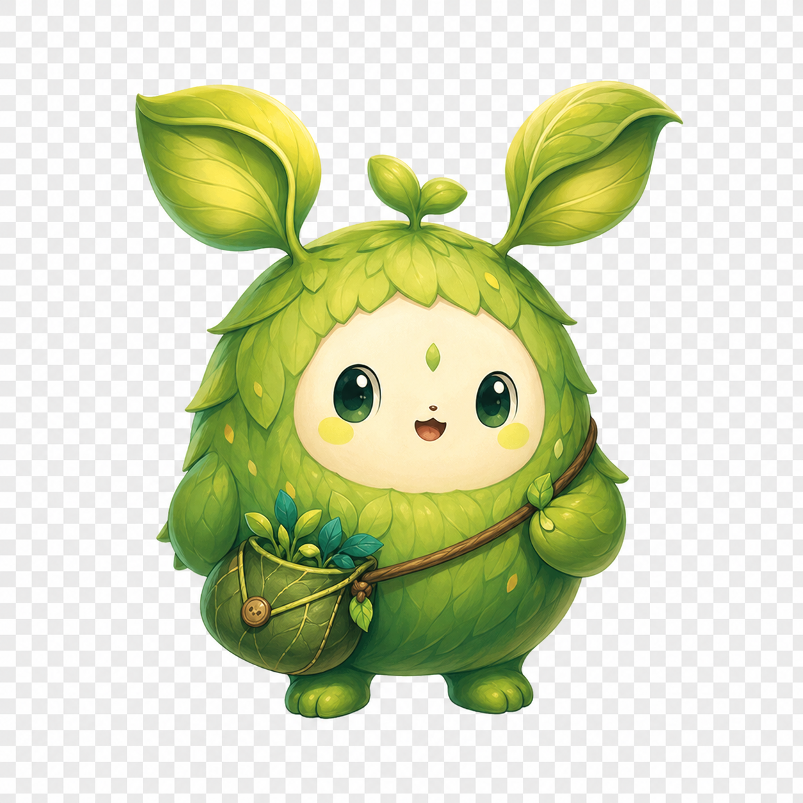
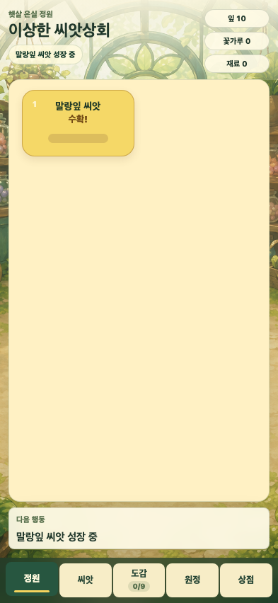
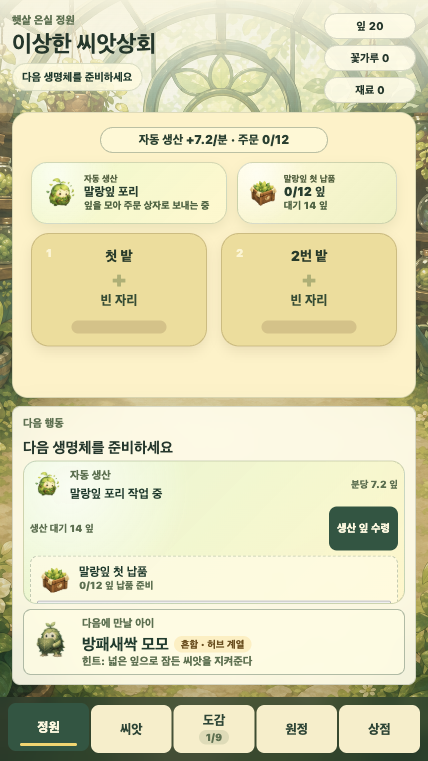
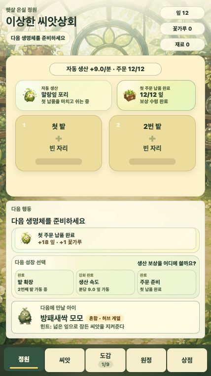
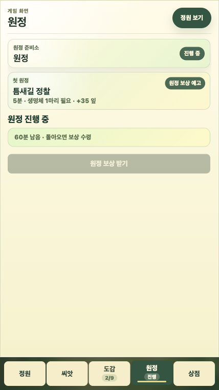
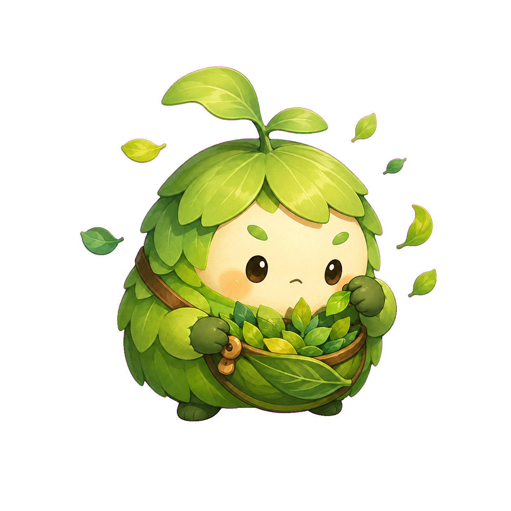
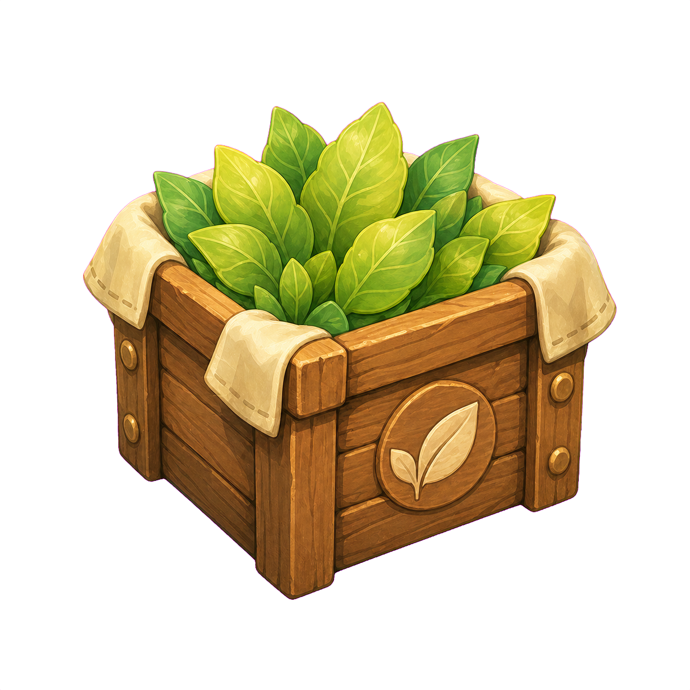
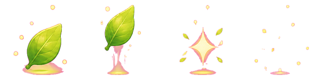
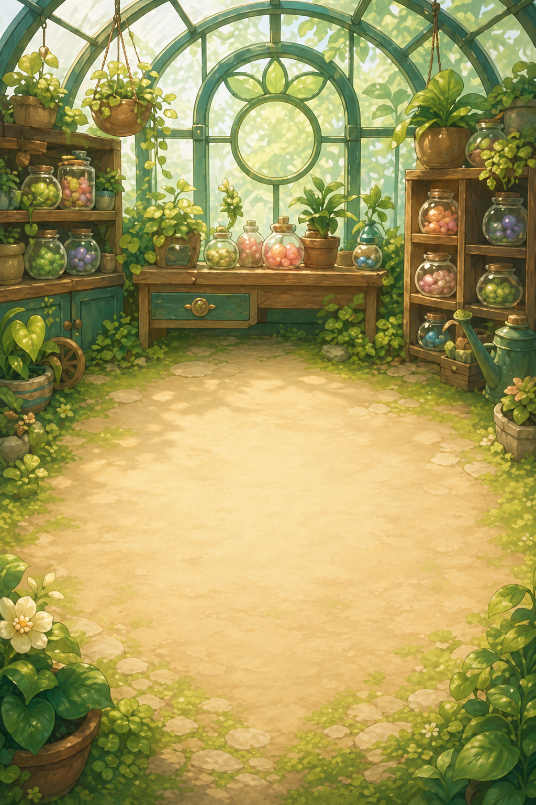

식물 생명체를 키우고 수집하는 idle game과, 그 게임을 계속 개선하는 AI Agent 운영 시스템을 하나의 제품 실험으로 묶은 프로젝트입니다.

이 저장소는 하나의 게임만 만드는 곳이 아닙니다. 첫 번째 목표는 플레이어가 직접 즐기는 브라우저 idle collection tycoon `이상한 씨앗상회`입니다. 두 번째 목표는 그 게임을 계속 개선하기 위한 AI Agent 기반 개발/운영 시스템입니다.
모바일 브라우저에서 바로 플레이하는 idle collection tycoon. 플레이어는 씨앗을 심고, 생명체를 수확하고, 그 생명체가 정원 생산과 주문 처리에 참여하는 모습을 봅니다.
AI Agent가 roadmap과 work item을 읽고, 계획을 쓰고, 구현하고, 검증하고, PR evidence를 남기는 개발 운영 레이어입니다.
AI 코딩 도구를 쓰면 개별 함수나 화면은 빠르게 만들 수 있습니다. 하지만 실제 제품 개발 속도는 코드 작성 시간만으로 결정되지 않습니다. 무엇을 만들지 계속 다시 설명해야 하고, 작은 변경이 전체 제품 목표와 분리되며, QA evidence 없이 “된 것 같다”로 넘어가면 프로젝트는 빨라지지 않습니다.
이 프로젝트는 이 병목을 제품 설계 문제로 봅니다. AI Agent가 잘 일하려면 코드보다 먼저 agent가 읽을 수 있는 북극성, roadmap, plan-first artifact, verification gate, visual evidence, stop rule이 필요합니다.
| 일반적인 병목 | 이 프로젝트의 해결 방식 |
|---|---|
| 요구사항을 매번 다시 설명해야 한다. | 북극성, roadmap, work item, project command 문서를 agent의 기본 operating surface로 둔다. |
| 작은 변경이 제품 목표와 연결되지 않는다. | 게임 작업은 player verb, core loop role, screen moment, asset/FX need, playtest evidence를 함께 정의한다. |
| 완료 기준이 모호하다. | local check, visual screenshot, report, PR metadata, CI evidence를 완료 조건으로 삼는다. |
| 장시간 agent 작업이 불투명하다. | heartbeat, watchdog, operator report, dashboard로 liveness와 blocker를 기록한다. |
초기 감정 목표는 첫 5분 안에 “얘 귀엽다. 하나만 더 키워볼까?”를 만드는 것이었습니다. P0.5부터는 이 감정 목표가 한 단계 확장됩니다. 생명체가 도감 카드로 끝나는 것이 아니라, 실제 정원 생산과 주문 진행을 움직이는 actor로 읽혀야 합니다.
| 성공 기준 | 설명 |
|---|---|
| 첫 생명체 획득 | 첫 90초 안에 씨앗 선택, 성장, 수확, 이름 있는 생명체 획득이 가능해야 한다. |
| 생산 actor | 첫 생명체가 단순 카드가 아니라 playfield 안에서 생산 actor로 읽혀야 한다. |
| 다음 목표 | 주문, 업그레이드, 연구, 원정, 다음 생명체 중 하나가 다음 행동으로 보여야 한다. |
| 영역 | 요구사항 | 현재 구현/증거 |
|---|---|---|
| Garden | plot, 성장 상태, harvestable state, 다음 행동을 한 화면에서 보여준다. | Phaser garden playfield + DOM action surface |
| Collection | 첫 수확은 currency가 아니라 이름 있는 생명체여야 한다. | 도감, reveal, next creature 목표 |
| Production | 생명체가 정원 경제에 참여하고 production tick이 보인다. | work creature asset, production tick, leaf reward FX |
| Order | 짧은 주문 목표와 납품 보상이 다음 목표로 이어진다. | order crate, repeat order, reward bridge |
| Upgrade | 첫 주문 보상이 생산 속도 등 의미 있는 선택으로 이어진다. | production speed upgrade loop |
| Meta | 연구와 원정은 장기 목표의 실루엣을 제공한다. | research unlock, clue reward, expedition start |
Phase 0에서는 실제 결제, 광고 SDK, 로그인/account, 외부 배포 자동화, 고객 데이터 수집, 실채널 GTM 자동 발행, 런타임 이미지 생성을 하지 않습니다. 이 제한은 기능 부족이 아니라 AI Agent 자율성을 다룰 때 필요한 안전 경계입니다.
React는 app shell, save state, HUD, secondary panel을 맡고, Phaser는 중앙 garden playfield를 맡습니다. 현재 화면은 plot state, 수확 상태, 생산 actor, 주문 crate, action surface를 분리해 보여줍니다.




AI 이미지 생성은 게임 플레이 중 호출되는 기능이 아니라 제작 파이프라인입니다. 에셋은 사전에 생성하고, 투명 배경, 작은 크기 판독성, 스타일 일관성, gameplay role을 검수한 뒤 manifest로 등록합니다.




| 단계 | 내용 | 완료 기준 |
|---|---|---|
| Plan | 게임 내 역할, 사용 화면, 크기, 투명 배경 필요 여부 정의 | asset id와 manifest path가 안정적으로 정해짐 |
| Generate | AI image generation으로 정적 후보 생성 | workspace에 원본 저장 |
| Review | 투명도, 작은 크기 판독성, 스타일 일관성 확인 | asset review report 통과 |
| Runtime | 게임은 manifest를 통해 정적 asset만 로딩 | 런타임 이미지 생성 API 호출 없음 |
운영사 레이어는 agent가 다음 작업을 고르고, 계획하고, 구현하고, 검증하고, PR evidence를 남기는 과정을 제품처럼 설계합니다. 목표는 빠른 생성이 아니라, 계속 움직이면서도 사람이 이해하고 멈출 수 있는 개발 시스템입니다.
| 검증 항목 | 증명 방식 |
|---|---|
| 게임 루프 | npm run check:loop, content config 검증, economy simulation |
| 문서/운영 규칙 | npm run check:docs, apply condition, project command, metadata checker |
| 화면 품질 | Browser Use 우선 QA, Playwright screenshot fallback, reports/visual/ evidence |
| 장시간 운영 | heartbeat ledger, watchdog, supervised trial report |
| Closed issues | 현재까지 72개의 issue가 생성되고 닫히며 작업 단위 evidence가 축적되었다. |
| Merged PRs | 현재까지 91개의 PR이 merge되어 게임 기능, UI, QA, 운영사 레이어가 반복적으로 개선되었다. |
| Operator trial | 초기 4시간 supervised trial은 issue-to-PR/CI discipline을 검증한 출발점이며, 현재는 그 이후 누적된 issue/PR 운영 evidence가 더 큰 증거다. |
| Safety | credential, payment, customer data, external deployment, real GTM action을 사용하지 않는 안전 경계를 유지한다. |